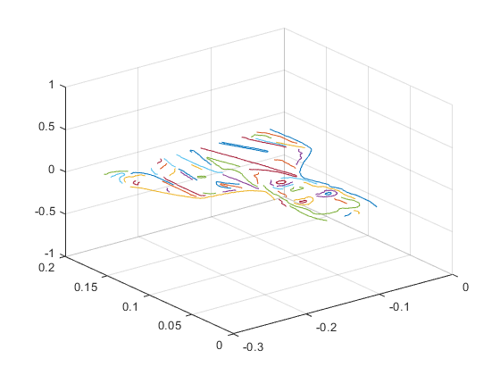
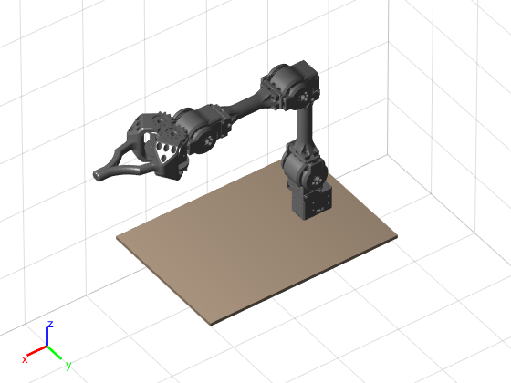
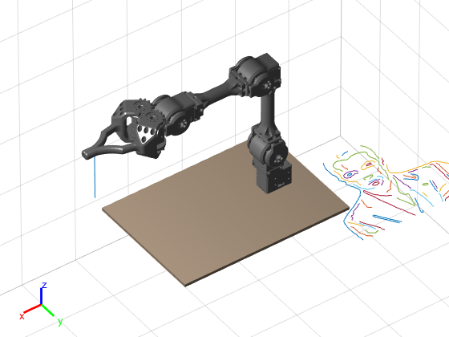

Contents
clc; clear; I = imread('C:\Users\surya\OneDrive\_MS RAS AI\2 Fall 2022\MAE 547\Project\leo.jpg'); imshow(I) [BW,thre] = edge(rgb2gray(I),'Canny',[0.0813 0.1281]); %エッジ検出 %figure, imshow(BW); BW2 = bwmorph(BW,'skel',Inf); %figure, imshow(BW2); BW3 = bwmorph(BW2,'spur',3); %figure, imshow(BW3); branchPoints = bwmorph(BW3,'branch',1); %枝分かれ位置の検出 branchPoints = imdilate(branchPoints,strel('disk',1)); BW3 = BW3 & ~branchPoints; %figure, imshow(BW3) BWseg = bwareaopen(BW3,10); %figure, imshow(BWseg) [B,L] = bwboundaries(BWseg,'noholes'); imshow(label2rgb(L, @jet, [.5 .5 .5])) hold on for k = 1:length(B) boundary = B{k}; plot(boundary(:,2), boundary(:,1), 'LineWidth', 3) end boundary = B{18}; edgeind = find(all(circshift(boundary,1)==circshift(boundary,-1),2),1) boundary = circshift(boundary,-edgeind+1); boundary = boundary(1:ceil(end/2),:) for i = 1:length(B) boundary = B{i}; edgeind = find(all(circshift(boundary,1)==circshift(boundary,-1),2),1); if ~isempty(edgeind) boundary = circshift(boundary,-edgeind+1); boundary = boundary(1:ceil(end/2),:); end B{i} = boundary; end imshow(label2rgb(L, @jet, [.5 .5 .5])) hold on for k = 1:length(B) boundary = B{k}; plot(boundary(:,2), boundary(:,1), 'LineWidth', 3) end origin = [0 0]; % 画像の原点の位置 delta = 0.001; % 1ピクセルの長さ B2 = B; figure; for i = 1:length(B) b = B{i}; bx = -b(:,2)*delta+origin(1); by = b(:,1)*delta+origin(2); bz = zeros(length(bx),1); B2{i} = [bx by bz]; plot3(bx,by,bz); hold on; end grid on; b_ = B2{1}; b=0.2*b_'; %traj = mstraj(b(:,2:end)', [0.5 0.5 0.5], [], b(:,1)', 0.02, 0.2); %Tp= SE3(traj) * SE3.oa( [0 1 0], [0 0 -1]); %mdl_puma560 %q = p560.ikine6s(Tp); % plotp(traj) %p560.plot(q) figure; mikata_arm_4; robot = importrobot('mikata_arm_4.urdf','MeshPath','.'); Q = robot.homeConfiguration; robot.show(Q,'preservePlot',false,'Frames','off'); set(gca,'CameraPosition',[7.6740 10.6196 11.3315],... 'CameraTarget',[0.0292 -0.0476 0.0280],... 'CameraUpVector',[0 0 1],'CameraViewAngle',1.3394,... 'DataAspectRatio',[1 1 1],'Projection','perspective');
edgeind =
23
boundary =
83 145
83 144
83 143
83 142
83 141
82 140
82 139
82 138
82 137
82 136
82 135
82 134
82 133
82 132
82 131
82 130
82 129
82 128
83 127
83 126
83 125
83 124
83 123
  Add a pen link to the robot / ペン（リンク）の追加
robot = mikata_arm_4; pen = robotics.RigidBody('pen'); penjnt = robotics.Joint('penjnt','fixed'); dhparam = [0 0 -0.09 0]; % DHパラメータ setFixedTransform(penjnt,dhparam,'dh'); pen.Joint = penjnt; addBody(robot,pen,'target_link'); robot.show(Q,'preservePlot',false,'Frames','off','Parent',gca); lineobj = findobj('Type','Line'); set(lineobj(1),'Visible','on'); %座標軸の調整 set(gca,'CameraPosition',[7.6740 10.6196 11.3315],... 'CameraTarget',[0.0292 -0.0476 0.0280],... 'CameraUpVector',[0 0 1],'CameraViewAngle',1.3394,... 'DataAspectRatio',[1 1 1],'Projection','perspective'); hold on; figure(gcf);
Visualize the planned path / 経路の表示
for i = 1:length(B2) b = B2{i}; plot3(b(:,1),b(:,2),b(:,3)); hold on; end figure(gcf);
Enhance the focused path / 境界の1つを強調
Solve the inverse kinematics / インバースキネマティクスを計算
同次座標行列を作成
for i=length(B2):1
temp = B2{i}
b = temp;
tf = makehgtform('translate',b(1,:))
plot3(b(:,1),b(:,2),b(:,3),'b','LineWidth',3);
figure(gcf);
% インバースキネマティクスの計算
ik = robotics.InverseKinematics('RigidBodyTree',robot);
[Q,~] = ik('pen',tf,[1 1 0 1 1 1],Q);
% ジョイントの角度の値
bJoint = arrayfun(@(x) x.JointPosition,Q)
Show the path with the calculated joint angles / ジョイント角度の確認
robot.show(Q,'preservePlot',false,'Frames','off','Parent',gca); lineobj = findobj('Type','Line'); set(lineobj(1),'Visible','on'); figure(gcf);
Visualization / アニメーション表示
figure(gcf) for i=1:size(b,1) pose = [eye(3) b(i,:)'; zeros(1,3) 1;]; [Q,~] = ik('pen',pose,[1 1 0 1 1 1],Q); robot.show(Q,'preservePlot',false,'Frames','off','Parent',gca); lineobj = findobj('Type','Line'); set(lineobj(1),'Visible','on'); drawnow; end
end
Copyright 2018 The MathWorks, Inc.
function robot = mikata_arm_4() if ~exist('mikata_arm_4.urdf','file') disp('Downloading the URDF and STL files for Mikata Arm...'); websave('mikata_arm_4.urdf','https://raw.githubusercontent.com/ROBOTIS-JAPAN-GIT/dynamixel_mikata_arm/master/mikata_arm_description/urdf/mikata_arm_4.urdf'); websave('mikata_arm_4_gripper.stl','https://github.com/ROBOTIS-JAPAN-GIT/dynamixel_mikata_arm/raw/master/mikata_arm_description/meshes/mikata_arm_4_gripper.stl'); websave('mikata_arm_4_joint1.stl','https://github.com/ROBOTIS-JAPAN-GIT/dynamixel_mikata_arm/raw/master/mikata_arm_description/meshes/mikata_arm_4_joint1.stl'); websave('mikata_arm_4_joint2.stl','https://github.com/ROBOTIS-JAPAN-GIT/dynamixel_mikata_arm/raw/master/mikata_arm_description/meshes/mikata_arm_4_joint2.stl'); websave('mikata_arm_4_joint3.stl','https://github.com/ROBOTIS-JAPAN-GIT/dynamixel_mikata_arm/raw/master/mikata_arm_description/meshes/mikata_arm_4_joint3.stl'); websave('mikata_arm_4_joint4.stl','https://github.com/ROBOTIS-JAPAN-GIT/dynamixel_mikata_arm/raw/master/mikata_arm_description/meshes/mikata_arm_4_joint4.stl'); websave('mikata_arm_4_joint5.stl','https://github.com/ROBOTIS-JAPAN-GIT/dynamixel_mikata_arm/raw/master/mikata_arm_description/meshes/mikata_arm_4_joint5.stl'); disp('Done.'); end robot = importrobot('mikata_arm_4.urdf','MeshPath',pwd); % Fix joint limits for the right gipper robot.Bodies{6}.Joint.PositionLimits = ... [-robot.Bodies{6}.Joint.PositionLimits(2),... robot.Bodies{6}.Joint.PositionLimits(1)]; % Add dummy link body1 = robotics.RigidBody('dummy_link'); jnt1 = robotics.Joint('dummy_joint'); tform = trvec2tform([.04225 0 0]); % User defined setFixedTransform(jnt1,tform); body1.Joint = jnt1; addBody(robot,body1,'link_5'); % Add end effector body2 = robotics.RigidBody('end_effector'); jnt2 = robotics.Joint('end_effector_joint'); body2.Joint = jnt2; addBody(robot,body2,'dummy_link'); % Add virtual target position body1 = robotics.RigidBody('target_link'); jnt1 = robotics.Joint('target_joint'); tform = trvec2tform([.093 0 0]); % User defined setFixedTransform(jnt1,tform); body1.Joint = jnt1; addBody(robot,body1,'dummy_link'); end